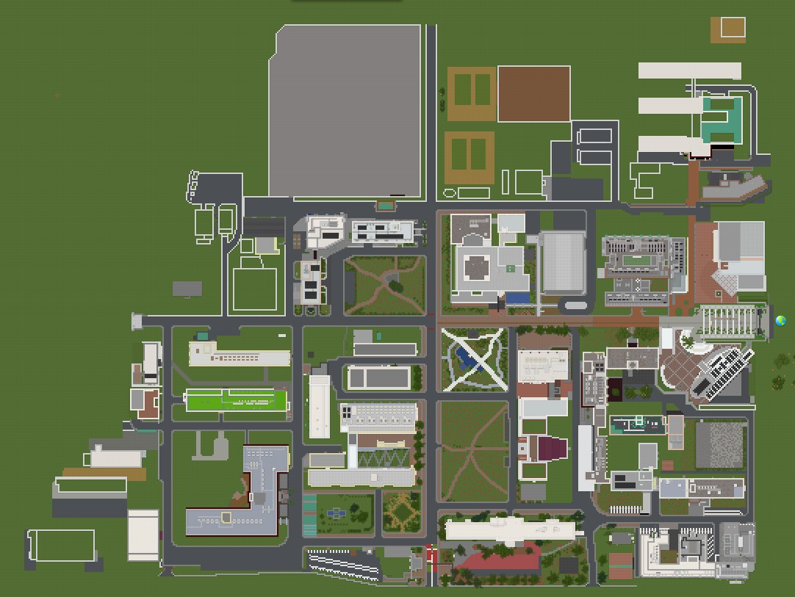

非公式サークル・農工大マイクラ部のホームページへようこそ！
マイクラ部では主にキャンパスをゲーム内に再現する計画や，工業modなどを入れて遊ぶ企画をたてたりしているよ！
※入部は，部員に直接会ったことのある人のみとしています．怪しい宗教かなにかのようですが，サーバーipなどを扱う関係上ハードウェア的なセキュリティは最低限高めようという指針なのでご了承しろください．
農工大マイクラ部の活動
マイクラ部は好きな時間，好きなタイミングで好き勝手に活動しています．
たいていは部員が運営しているサーバーが稼働しているので， そこで遊んだり，リソースパックやmod，プラグインなどの制作に勤しんでいます．決まった活動というのはなく，完全に自由参加です．
(というかマインクラフトをやっている姿を見ない部員すらいます)
部長は半年マイクラしてません！
何をしようがOK！ それが我々の部活です．
現在稼働中の企画は，農工大工学部再現計画，mod制作計画，生活鯖ひとつです．新企画募集中！
～農工大マイクラ部の輝かしい歴史～
| 年月日 | 鯖のバージョン | できごと |
|---|---|---|
| 2021 | ||
| 7-28 | 1.7.10 |
マイクラ部がどこからともなく発生した．はじまりの鯖オープン．
|
| 9-11 | 1.17.1 |
統合版とJava版の人が両方入れるバニラ鯖オープン．
だが，絶海の孤島にスポーンしてしまう．
|
| 9-18 | 1.12.2 |
はじまりの鯖が悲しくもほぼ開かなくなったので，新工業鯖のオープン
|
| 9-21 | 1.12.1 |
違法建築計画浮上．
しかし色々と計画の詰めが甘く３日で過疎る．
|
| 9-28 | 1.17.1 |
農工大再現計画始動
|
| 10-30 | 1.10 |
有名配布ワールド，The Unusual Skyblockの計画が浮上．
しかし新学期に入り若干名の中毒者をのぞくほとんどのメンバーが参加できず数日で消滅．
いつかリベンジしたいものである．
|
| 2022年 | ||
| 1-1 | 1.17.1 |
マイクラ部，初めての新年を迎える．
|
| 2-10 | 1.12.2 |
冬休み以前より議論されていたSevtech攻略計画，開始．
鯖もクライアントも重すぎて攻略以前の部分が色々問題に．
|
| 5-8 | 1.12.2 |
Sevtechの全実績解除，ラスボスの討伐．
ところでSevのラスボス君，よわすぎない？
|


農工大工学部再現計画
再現計画の現状

現在工事中